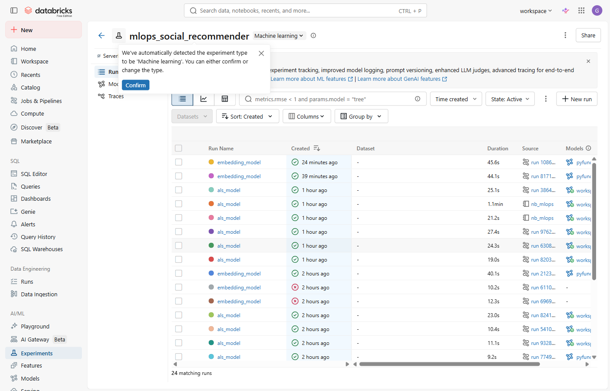
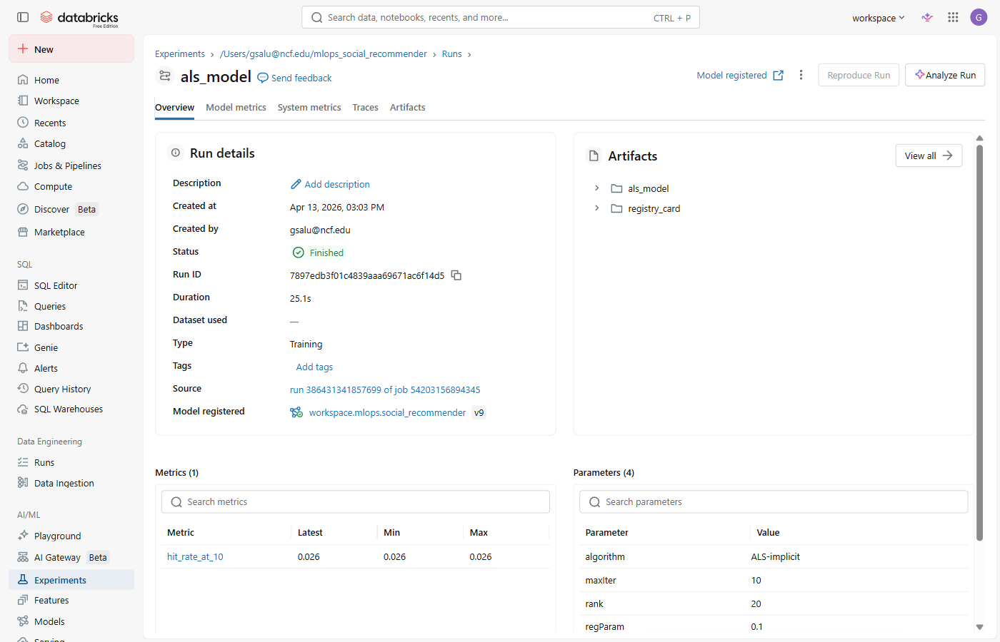

Notebook: Open nb_mlops from the course repo in your Databricks workspace.
Use serverless compute. The data file described below is already in the repo — you do not
need to download or upload anything.
The dataset is a 120-second capture of the Bluesky AT Protocol firehose — a public real-time
stream of every like, follow, and post on the network, recorded on April 13, 2026 at 17:51 UTC.
The file bluesky_interactions.json in the course repo contains 42,181 raw interaction events
(39,118 likes and 3,063 follows), each with four fields:
u — the DID (Decentralized Identifier) of the user who acteda — the DID of the account they interacted witht — the interaction type: "like" or "follow"ts — the UTC timestamp of the event (e.g. "2026-04-13T17:51:44.092Z")The notebook reads this file, aggregates multiple interactions between the same (user, account) pair into a single interaction score (follow = 3 pts, like = 2 pts), and integer-encodes every DID so the IDs can be used as matrix indices. The result is 36,899 unique (user, account) preference signals across 17,462 users and 19,088 accounts.
The interaction matrix is 17,462 × 19,088 — over 333 million cells. Only 36,899 of them have any observed value. That is a density of 0.01%. This extreme sparsity is the defining challenge of recommendation: the model must infer preferences for the 99.99% of pairs it has never seen. ALS and the TF embedding model in Lab 2 both solve this problem, in different ways.
The aggregated feature table is written to a Delta table (workspace.mlops.mlops_features).
Before any model sees it, one interaction per user is held out as the test set
(workspace.mlops.mlops_holdout). The remaining rows form the training set
(workspace.mlops.mlops_train).
Cell Setup — Configuration
All tunable values are defined as constants at the top of the notebook so you only change them in one place.
The data path points to bluesky_interactions.json already in the course repo.
BLUESKY_DATA_PATH = "/Workspace/Repos/gsalu@ncf.edu/.../bluesky_interactions.json" ALS_RANK = 20 # latent factors — the "rank" of the two factor matrices ALS_ITER = 10 # how many ALS training iterations to run ALS_REG = 0.1 # regularization: prevents embeddings from growing too large N_REC = 10 # how many recommendations to generate per user SCHEMA = "workspace.mlops" # catalog.schema where Delta tables are written
Cell Step 1a — Load interactions and weight by type
Reads every raw event from the JSON file. Multiple interactions between the same user and account are collapsed into a single score. A follow is worth more than a like because it signals stronger intent.
_weights = {"follow": 3, "like": 2}
_scores = {}
for _ev in _events:
_key = (_ev["u"], _ev["a"]) # (user_did, account_did)
_scores[_key] = _scores.get(_key, 0) + _weights.get(_ev["t"], 1)
A holdout (also called a test set) is data the model is never allowed to see during training. You set it aside first, train on everything else, then use the holdout only at evaluation time — once, to get an honest measure of how the model performs on data it has never encountered.
Think of it like a closed-book exam. If the student studied the exam questions beforehand, the score tells you nothing about whether they actually learned the material. A model evaluated on its own training data always looks great — and always lies. The holdout is the exam the model hasn't seen.
Here we hold out one interaction per user — their strongest signal (highest score). After training, we check whether the model's top-10 recommendations include that exact account. If it does: hit. If not: miss.
Cell Step 1d — Train / holdout split
A window function ranks each user's interactions by score. Rank 1 (the strongest signal) goes to the holdout. Every other interaction goes to training. This means the model is evaluated on the interaction it should have been most confident about — a conservative test.
w = Window.partitionBy("user_id").orderBy(F.desc("interaction_score"))
ranked = feat_table.withColumn("rnk", F.row_number().over(w))
holdout_df = ranked.filter(F.col("rnk") == 1).drop("rnk") # one row per user
train_df = ranked.filter(F.col("rnk") > 1).drop("rnk") # everything else
mlops_features, mlops_train, mlops_holdout.implicit LibraryALS (Alternating Least Squares) is matrix factorization. It decomposes the sparse
user-account interaction matrix into two dense factor matrices — one for users, one for accounts — each
with rank dimensions (latent factors). Each dimension captures a learned concept such as
"tech content", "news", or "art". A user's predicted affinity for any account is then the dot product
of their two vectors.
The notebook uses the implicit Python library
rather than Spark MLlib. Both implement the same ALS algorithm. implicit runs on the driver in
Python, which works on Databricks serverless compute and is trivially fast for this dataset size.
Cell Build a sparse matrix
The implicit library needs a scipy sparse matrix, not a Spark DataFrame.
We pull the training table to the driver with .toPandas() then build a
csr_matrix — a format that only stores the non-zero cells, which is critical when
99.99% of the matrix is empty.
train_pdf = spark.table(f"{SCHEMA}.mlops_train").toPandas()
user_item = sp.csr_matrix(
(train_pdf["interaction_score"].astype(float).values,
(train_pdf["user_id"].values, train_pdf["account_id"].values)),
shape=(N_USERS, N_ACCOUNTS))
Cell Train ALS inside an MLflow run
with mlflow.start_run(run_name="als_model") opens a run context. Every
mlflow.log_params() and mlflow.pyfunc.log_model() call inside it
is attached to this run. When the with block exits, the run is closed and the
data is committed to the tracking server. The model is wrapped in a custom
ALSRecommender class so MLflow can serialize it as a standard pyfunc.
with mlflow.start_run(run_name="als_model") as als_run:
mlflow.log_params({"algorithm": "ALS-implicit",
"rank": ALS_RANK, "maxIter": ALS_ITER, "regParam": ALS_REG})
als_model = implicit.als.AlternatingLeastSquares(
factors=ALS_RANK, iterations=ALS_ITER,
regularization=ALS_REG, random_state=SEED)
als_model.fit(user_item) # < 2 seconds on this dataset
mlflow.pyfunc.log_model( # saves the model as an artifact
artifact_path="als_model",
python_model=ALSRecommender(),
artifacts={"bundle": bundle_path}, ...)
An account factor (also called a latent factor or embedding) is a list of numbers that ALS learns to represent an account. You choose how long the list is — that length is the rank (default: 20). Each position in the list corresponds to some concept the model discovered on its own, like "tech content", "news", or "sports". The model is never told what those concepts are — it infers them from the interaction patterns.
Every user gets a matching list of the same length (a user factor). To predict how much user A would like account B, the model computes the dot product of user A's list with account B's list — one multiplication per dimension, then sum them all up. A high dot product means the two vectors are pointing in the same direction, i.e. the user's interests align with what the account posts.
Before training, both lists are random numbers. ALS alternates between adjusting the user factors (holding account factors fixed) and adjusting the account factors (holding user factors fixed), repeating until the dot products match the observed interaction scores as closely as possible. That process is the "Alternating" in ALS.
Run all the Stage 2 cells. Once they finish, MLflow will have created an experiment and logged a run. Use the diagram below to find it:
① In the left sidebar click Experiments — then click mlops_social_recommender:

② Click any als_model row to open the run detail page:

rank,
iterations, and regularization.als_model/ folder — the serialized model
wrapped as an MLflow pyfunc. Any system that can call Python can load it,
regardless of how it was trained.The ALS model produced top-10 recommendations for every user. Evaluation scores them against the holdout set — one real interaction per user that was set aside before training began.
Hit Rate @ 10 = users whose held-out account appears in their top-10 list ÷ total users evaluated.
Cell Compute hit rate
The evaluation is a simple join: join the recommendations table against the holdout table on
(user_id, account_id). Any row that matches is a hit — the model recommended
the exact account the user actually interacted with. Count the hits, divide by total holdout rows.
def hit_rate(recs_table: str) -> float:
recs = spark.table(recs_table)
holdout = spark.table(f"{SCHEMA}.mlops_holdout")
hits = holdout.join(recs, ["user_id", "account_id"], "inner")
n_hits = hits.count()
total = holdout.count()
return n_hits / total
als_hr = hit_rate(f"{SCHEMA}.mlops_als_recs")
Cell Log the metric back into the MLflow run
The run was already closed when training finished. We reopen it by passing the same
run_id to mlflow.start_run(). This adds the evaluation metric to the
existing run record — so both training parameters and the evaluation score live in
the same place.
with mlflow.start_run(run_id=als_run_id):
mlflow.log_metric("hit_rate_at_10", als_hr)
hit_rate_at_10 appears. Notice it lives in
the same record as the training parameters — this is why MLflow is useful: every number that
describes a run is in one place, tied to the exact code and data that produced it.The holdout was constructed before any model saw the data. Evaluating on training data makes every model look good and produces a meaningless metric. Holdout discipline is non-negotiable in production ML.
Once training and evaluation are complete, the model is packaged as a versioned artifact in the
MLflow Model Registry under the name social_recommender. Registration is
a promotion event: the model moves from an ephemeral experiment run to a named, versioned artifact that
any downstream system can reference by name.
models:/social_recommender/latest always resolves to the current best versionOn Databricks Free Edition, writes to the Unity Catalog model registry bucket are blocked. The notebook catches this and logs a model card JSON artifact to the run instead — it contains the same information (model name, run ID, algorithm, hit rate) that a registry entry would hold. The pipeline structure and concepts are identical to a paid workspace.
In a production team, registering a model version is also the trigger for a Deployment Job: an automated pipeline that picks up the new version, runs a validation pass, waits for human approval, and then promotes it to a serving endpoint. Every step that job takes is written to the model version's Activity Log — a permanent, auditable record of exactly what happened to this version of the model and when.
Without an activity log, the answer to "when did this model go to production and who approved it?" is usually an email chain or a Slack thread — if it exists at all. With the registry and deployment jobs, that information is attached to the model version itself and queryable by any system that has access.
Cell Register the model (with free-tier fallback)
mlflow.register_model() copies the artifact from the run into the Unity Catalog model
registry and assigns it a version number. On the free tier, the registry storage bucket denies writes.
The try/except catches that and logs a model card JSON to the run's
Artifacts tab instead — same information, different location.
model_uri = f"runs:/{als_run_id}/als_model"
MODEL_NAME = "workspace.mlops.social_recommender"
try:
reg = mlflow.register_model(model_uri, MODEL_NAME)
print(f"Registered: {MODEL_NAME} version={reg.version}")
except Exception as e:
# Free tier: IAM denies PutObject on the registry bucket
print("Registry write blocked — logging model card instead.")
model_card = {
"model_name": MODEL_NAME,
"run_id": als_run_id,
"algorithm": "ALS-implicit",
"hit_rate_at_10": round(als_hr, 4),
"status": "CANDIDATE — not registered (free tier)",
}
with mlflow.start_run(run_id=als_run_id):
mlflow.log_artifact(card_path, "registry_card")
On the free tier you will see:
registry_card/model_card.json.run_id in the model card. Open that run in Experiments.rank, maxIter, regParam parameters and
hit_rate_at_10 metric match what's in the model card.Think through what happens after a model is registered:
mlflow.pyfunc.load_model("models:/social_recommender/latest")@championWhat additional events would you want in the Activity Log for a model serving a live customer API? (canary rollout, human approval, traffic shift, rollback)
Lab 2 (mlops_lab2.html) trains a TensorFlow embedding model on the same feature table, compares hit rates against ALS, and decides whether to register a new version. Run it after this lab is complete — the feature table and ALS recommendations created here are prerequisites.
ALS_RANK constant from 20 to 50 and
rerun the ALS cells. Does hit rate improve? More factors mean a richer model but also more parameters
to fit on the same sparse data — does overfitting show up?registry_card/model_card.json. Add a field to the card in the notebook
(e.g. trained_by with your name) and rerun Stage 4 to see it update.